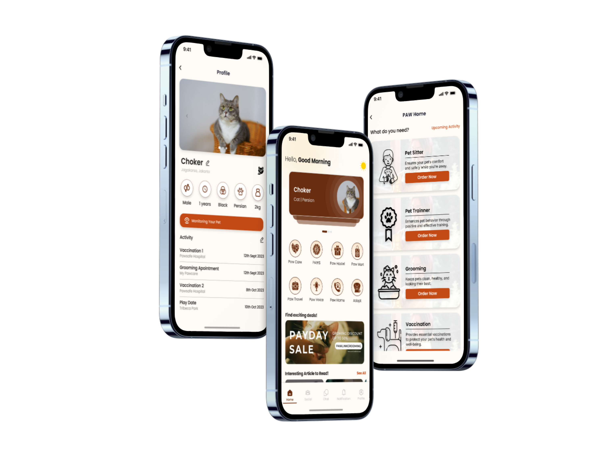
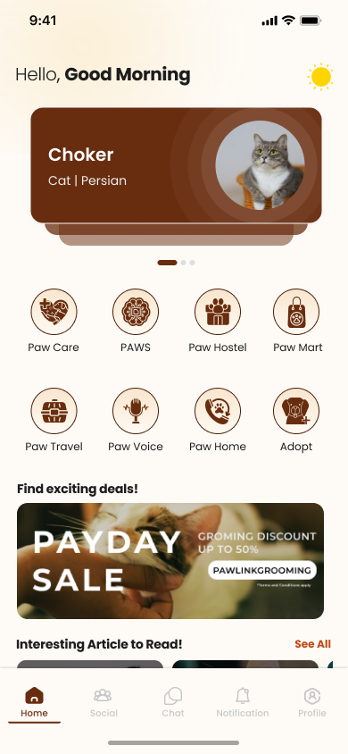
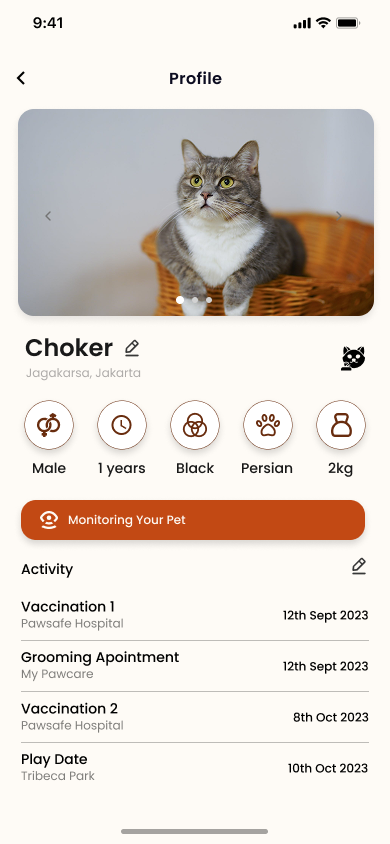
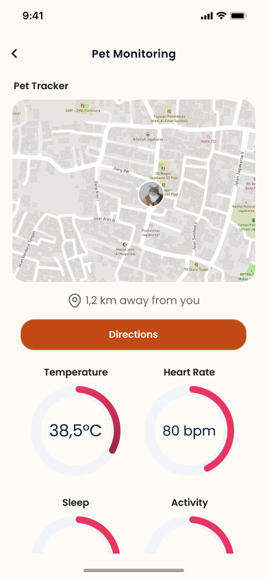
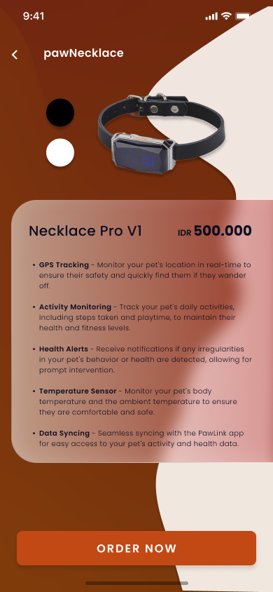
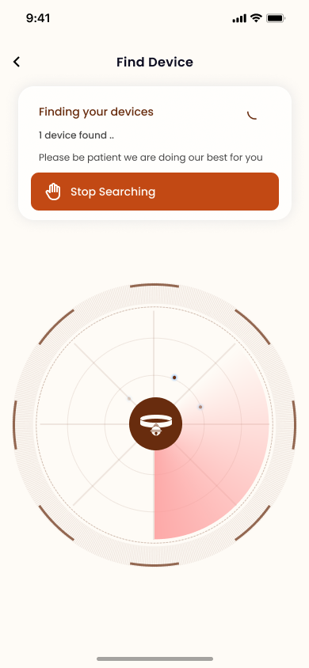
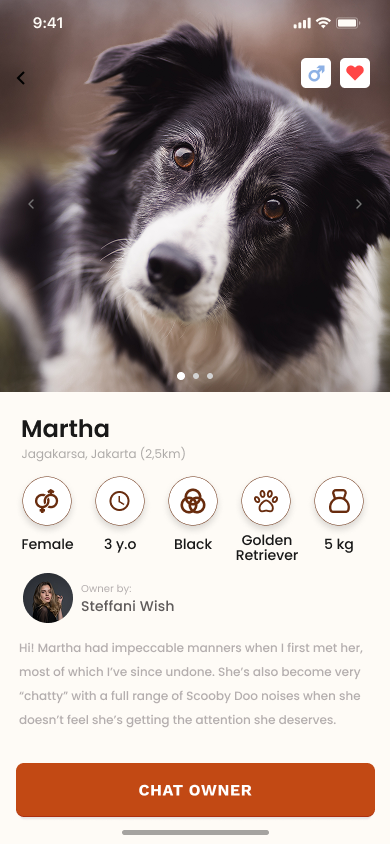
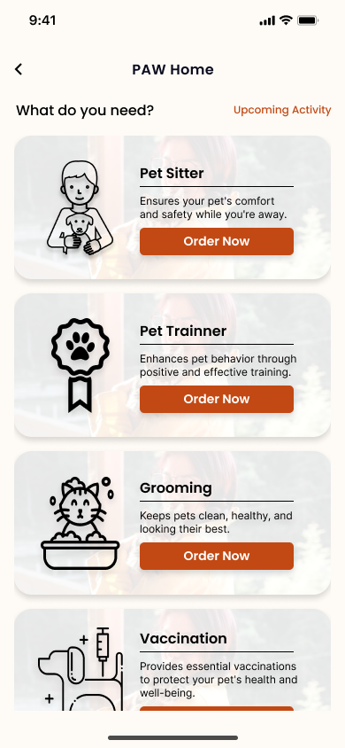
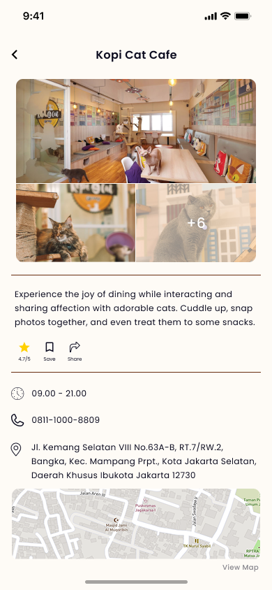

Paw Link
A mobile app that connects owners, their pets, and pet services in one place.
- Role
- UI/UX Designer
- Timeline
- September 2024
- Stack
- Figma · Maze
- Outcome
- Prototype, INSPACE 2024

About the project
PawLink is a mobile app for iOS and Android that helps pet owners take care of their pets. It connects to a smart collar, so owners can see their pet’s condition, location, and activity in real time. The app also brings pet services together in one place, such as vet consultation, home service, pet hotel, adoption, and a pet shop. There is also a community for pet lovers, and AI features that help owners understand their pet’s needs, including analyzing the sounds their pets make.
The challenge
The main challenge was fitting many pet-related needs into one mobile app. Owners need to monitor their pets, find vets, and book services, and putting all of that on small screens could easily feel crowded. Connecting the app with a smart collar and AI added another layer. We had to design a flow that was clear for people using these technologies for the first time, while still giving accurate and useful information about their pets.
How we worked
We used the User-Centered Design method, which focuses on what users actually need.
- Research. We did in-depth interviews with pet owners who have busy daily routines. The goal was to understand their needs and pain points in caring for their pets, and which features they wanted. We turned the interview results into an empathy map and a user persona.
- Concept. We turned the research findings into a Point of View (POV) statement and How Might We (HMW) questions. Then we built the information architecture to decide which features the app needed and how they connect.
- Design. We made a style guide and a design system for the app. After that, we created a low-fidelity prototype, then a high-fidelity prototype.
- Testing. We tested the prototype with users to see if they could finish the main tasks, and used the results to see which flows worked well and which ones needed improvement.
What we designed
- Homepage: The main page providing quick access to PawLink’s features and services.
- Pet detail: Profile page for each pet, displaying its information and activity history.
- Pet monitoring: Displays the pet’s real-time health status and location through data collected by the smart collar.
- Paw necklace: Introduces PawLink’s smart collar and highlights its key benefits, including real-time location, health, and activity tracking. After purchasing the collar, users can connect it to the app to access real-time pet monitoring.
- Pair device: Allows users to pair the physical smart collar with the PawLink app, enabling real-time tracking of their pet’s health status, location, and activity.
- Adoption: Helps users discover pets available for adoption and guides them through the adoption process.
- Paw home: Connects pet owners with in-home pet care services, making it easier to arrange care without leaving home.
- Paw travel: Helps pet owners discover pet-friendly destinations to explore with their pets.








Outcome
PawLink was my entry for INSPACE 2024, a national competition held by Institut Teknologi Kalimantan. It didn’t reach the final, but I’m happy with what I learned from working on it. I got to do the whole process, from interviewing users to testing the prototype, and I learned a lot about designing for AI and IoT features.
The prototype is available here ↗ and the creative proposal is here ↗.
What's next
Let’s work together.
I’m open to UI/UX design roles and collaborations. Let’s talk about how I can contribute.